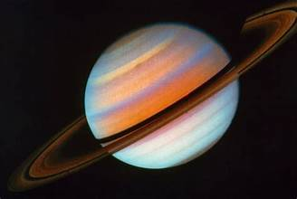

Saturn is a massive ball made mostly of hydrogen and helium. The farthest planet from Earth discovered by the unaided human eye, Saturn has been known since ancient times. The planet is named for the Roman god of agriculture and wealth, who was also the father of Jupiter.Saturn is the sixth planet from our Sun (a star) and orbits at a distance of about 886 million miles (1.4 billion kilometers) from the Sun.Nine Earths side by side would almost span Saturn’s diameter. That doesn’t include Saturn’s rings.Saturn takes about 10.7 hours (no one knows precisely) to rotate on its axis once—a Saturn “day”—and 29 Earth years to orbit the sun.
